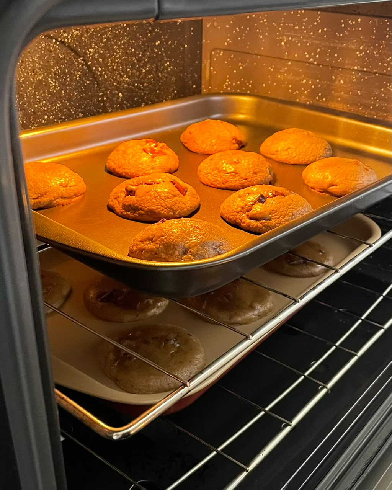
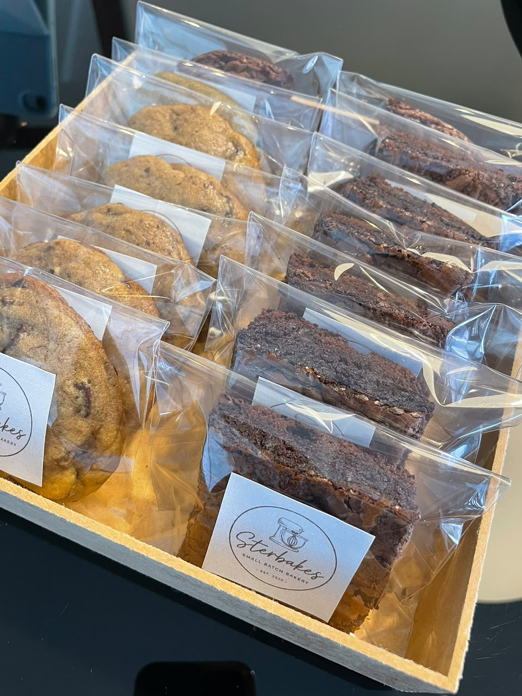
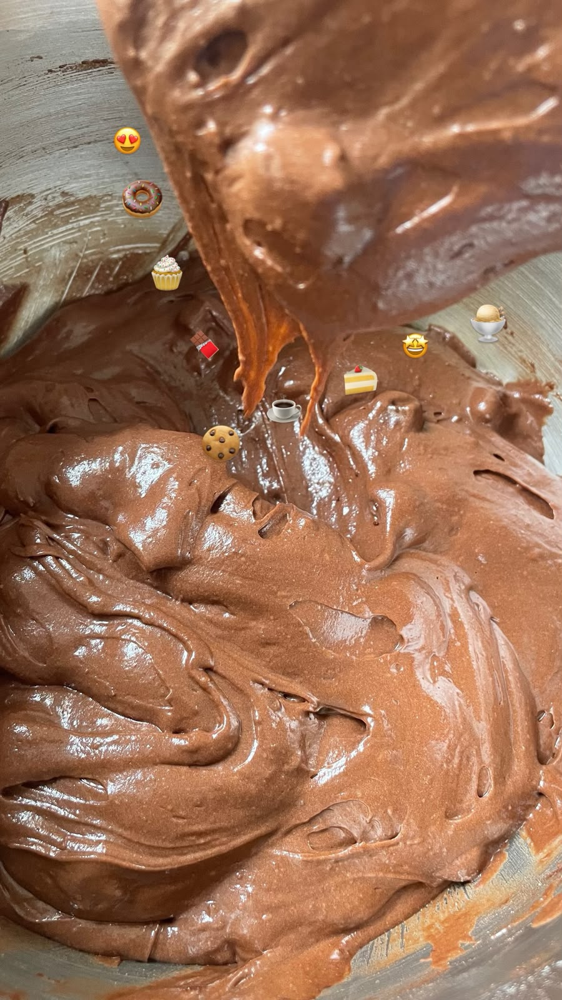

What began as a simple love for baking (and an even bigger love for eating sweets) slowly turned into something more. With extra time at home, she found herself experimenting with recipes, trying new flavors, and spending countless hours in the kitchen doing what she loved most.
For her, baking was never just about making something delicious. It was about the little moments of happiness that come with it. The excitement of trying a fresh batch of cookies, sharing a homemade dessert with someone you love, or simply enjoying something sweet after a long day.
And she wanted to share that feeling with others.
That's how Sterbakes was born. What started as a personal passion became a way to spread a little more sweetness, one homemade treat at a time.
Today, that same love goes into everything she bakes, with the hope that every bite brings a little happiness to someone's day.
Made with love, meant to be shared.